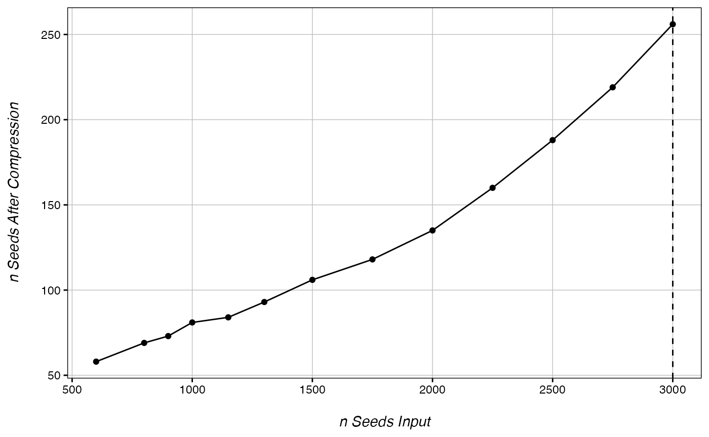
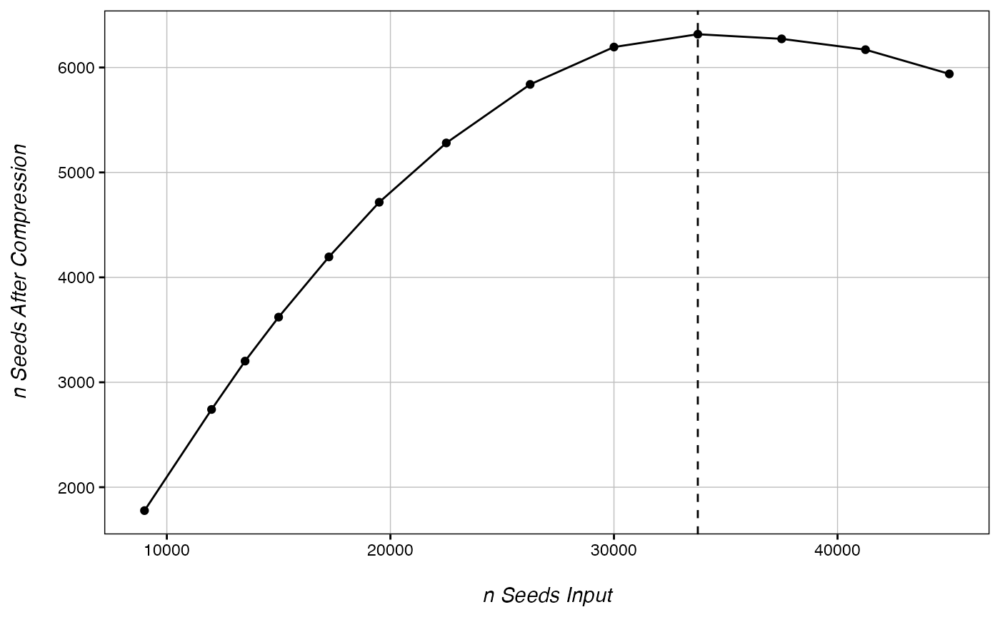
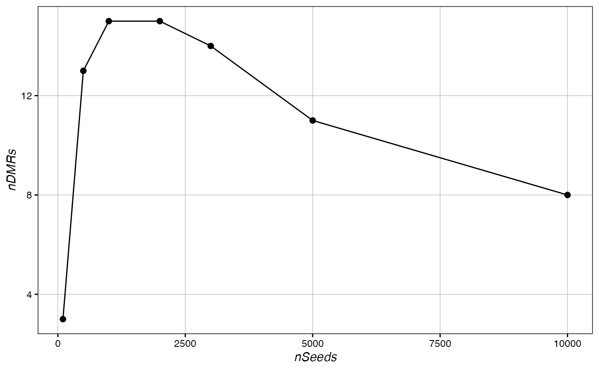
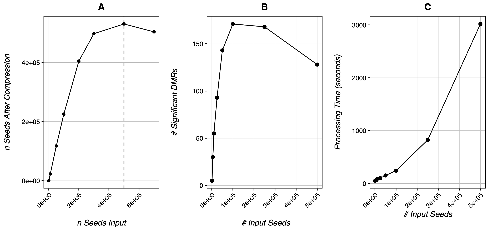
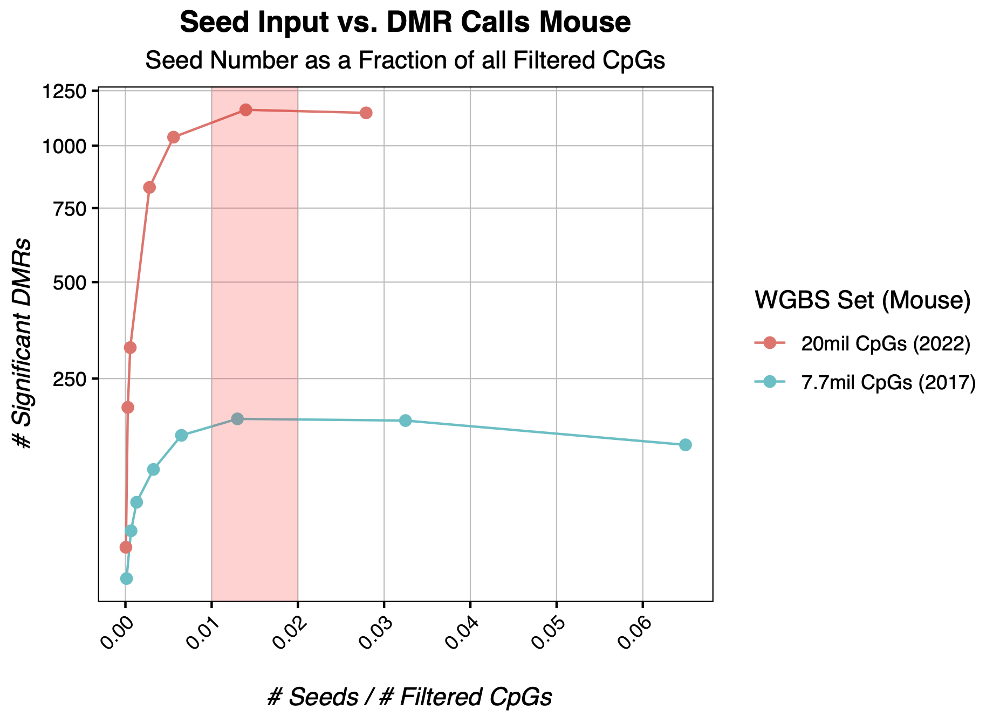

Optimizing DMR Calling
Kathryn Lande
2024-04-11
Source:vignettes/Optimizing_DMR_Calling.Rmd
Optimizing_DMR_Calling.RmdPCBS’s DMR calling works by selecting a number of high-scoring CpGs, and searching regions around these CpGs iteratively to identify if the average CpG score near these seeds is significantly different from the local background CpGs scores.
Because we expect many of the CpGs in a true DMR region to be selected as seeds, seeds that are near each other are compressed into single seed points before expansion in order to save computing time.
While simulations demonstrate that this algorithm is highly resistant to false positives regardless of input seed number, if too few seeds are included, DMRs around more weakly significant CpGs will be missed. Conversely, if too many seeds are included, seeds can become “overcompressed.” Overcompression occurs when seeds from multiple nearby DMRs are compressed into a single seed, causing the algorithm to identify a single DMR where multiple are found. Thus, for any dataset, there is an optimal seed number that strikes a balance between including too few seeds and overcompressing your data.
There are two ways to identify this value. The first is using the CheckOvercompression() function. This function takes a vector of seed values, and finds the number of compressed seeds for each value. If the function identifies an input seed value wherein the number of compressed seeds begins to decrease, this is a good sign that overcompression is occurring.
library(PCBS)
library(ggplot2)
eigen <- read.delim("WGBS.txt") # https://github.com/katlande/PCBS/WGBS.txt
ranks <- getPCRanks(eigen, IDs = c("trt", "ctl"))
CheckOvercompression(ranks, 1000) # no overcompression
## Checking 13 seed values for best DMR calling............. done!
CheckOvercompression(ranks, 15000) # overcompression at 33,750 seeds
## Checking 13 seed values for best DMR calling............. done!
While this function is relatively fast, it should be used as a safeguard rather than a seed number optimizing tool. In many cases, overcompression can occur exclusively at the true DMR regions without occurring globally in the dataset. This may happen if many of the significant DMRs in your dataset are close together.
However, because this algorithm is so resistant to false negatives, we can simply try DMR calling with a number of different input seeds, and select the input value that returns the most significant DMRs:
chrDict <- chromDict(ranks) # speeds up the Get_Novel_DMRs() if we are running in loops
# Run DMR calling in a loop and identify the number of significant DMRs for a set of
c() -> sig
for(seed in c(100, 500, 1000, 2000, 3000, 5000, 10000)){
DMR <- Get_Novel_DMRs(ranks, seed, chromDictObj = chrDict, DMR_resolution=200, minCpGs=10)
c(sig, nrow(DMR[DMR$FDR <= 0.05,])) -> sig
}
ggplot(data.frame(nSeeds=c(100, 500, 1000, 2000, 3000, 5000, 10000),
nDMRs=sig), aes(x=nSeeds, y=nDMRs))+
geom_line()+ geom_point(size=2)+ Ol_Reliable()
In our test data, the optimal input would be around 2,000 seeds, much lower than the global overcompression value of 33,750 seeds. We can see a similar result the below data fromCole et al 2017’s mouse wildtype data:

Here, CheckOvercompression() finds global overcompression occurring around 5 million seeds (A), while total DMR calls actually peak at around 100,000 seeds (B). Moreover, increasing seed number appears to increase processing time exponentially (C) while increasing the DMR calls logarithmically. Thus, in the case of Cole et al’s dataset, 100,000 seeds would be the optimal number.
In mouse WGBS datasets, we find that a seed number between 1-2% of all input CpGs is generally a good number to approximate the optimal input seed value while optimizing computational resource use. Here we compare two wildtype mouse WGBS experiments, one from 2017 with only around 8 millions CpGs after filtering, and one from 2022 with around 20 million CpGs after filtering. Though more testing is required to state confidently, we suspect this to be a good expected optimal seed value range for most datasets.
